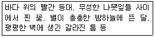

웹디자인기능사 (2016-07-10 기출문제)
1과목: 디자인 일반
1. 다음 중 디자인의 기본 요소들로 옳은 것은?
- 선, 색채, 공간, 수량
- 점, 선, 면, 질감
- 시간, 수량, 구조, 공간
- 면, 구조, 공간, 수량
(정답률: 92%)

2. 다음 중 시각 디자인의 4대 매체가 아닌 것은?
- 포스터 디자인
- 신문 광고디자인
- TV 광고디자인
- 텍스타일 디자인
(정답률: 82%)
3. 다음과 가장 관계있는 디자인 원리는?

- 조화
- 통일
- 점증
- 강조
(정답률: 80%)
4. 색에 대한 설명으로 옳은 것은?
- 차가운 색이나 명도와 채도가 낮은 색은 진출색으로 돌출되어 보인다.
- 따뜻한 색이나 명도가 높은 색은 부피가 팽창되어 보인다.
- 무채색이 유채색보다 돌출되어 보인다.
- 무채색 바탕에 따뜻한 색과 차가운 색의 크기가 같은 원을 올려놓으면 따뜻한 색의 원이 더 후퇴되어 보인다.
(정답률: 79%)
5. 다음 중 감산 혼합의 3원색으로 옳지 않은 것은?
- MAGENTA
- YELLOW
- BLUE
- CYAN
(정답률: 78%)
6. 색채에 대한 설명으로 옳은 것은?
- 색채는 심리적 성질을 갖지 못한다.
- 어떤 물체가 빨간색 파장을 가장 많이 흡수하면 빨간색 물체로 보이게 된다.
- 색채의 분류는 무채색, 유채색, 중성색 3가지가 있다.
- 색채를 느끼는 경우 유채색, 느낄 수 없는 경우 무채색이라 한다.
(정답률: 62%)
7. 인접하는 두 색의 경계 부분에 색상, 명도, 채도의 대비가 더욱 강하게 일어나는 현상을 무엇이라고 하는가?
- 면적대비
- 보색대비
- 한난대비
- 연변대비
(정답률: 66%)
8. 서로 반대되는 색상을 배색하였을 때 나타나는 느낌으로 옳은 것은?
- 강렬한 느낌
- 정적인 느낌
- 간결한 느낌
- 차분한 느낌
(정답률: 88%)
9. 다음 중 쓴맛을 나타내는 색은?
- 노랑
- 주황
- 흰색
- 파랑
(정답률: 65%)
10. 다음 중 동화현상에 대한 설명으로 틀린 것은?
- 색들끼리 서로 영향을 주어서 인접색에 가까운 것으로 느껴지는 현상을 말한다.
- 색 자체가 명도나 채도가 높아서 시각적으로 빨리 눈에 띠는 성질을 말한다.
- 동화현상에는 명도의 동화, 채도의 동화, 색상의 동화가 있다.
- 동화현상은 눈의 양성적 또는 긍정적 잔상과의 관련으로서 설명된다.
(정답률: 66%)
11. 형(shape)과 형태(form)에 대한 설명으로 옳은 것은?
- 형태는 단순히 우리 눈에 비쳐지는 모양(윤곽)이다.
- 형은 일정한 크기, 색채, 질감을 가진 모양이다.
- 형은 2차원적인 표현이고, 형태는 3차원적인 표현이다.
- 디자인에서 형(shape)을 구성하는 것은 점이다.
(정답률: 73%)
12. 다음 중 게슈탈트의 시각에 관한 법칙으로 볼 수 없는 것은?
- 근접의 원리
- 유사의 원리
- 연속의 원리
- 통일의 원리
(정답률: 66%)
13. 다음 디자인 형태 중에서 다른 성격을 지닌 것은 어느 것인가?
- 추상적 형태
- 기하학적 형태
- 유기적 형태
- 기능적 형태
(정답률: 31%)
14. 다음 중 시각디자인의 분야로 보기 어려운 것은?
- 편집 디자인
- 광고 디자인
- 패키지 디자인
- 조경 디자인
(정답률: 73%)
15. 검은 종이 위에 노랑과 파랑을 나열하고 일정한 거리에서 보면 노랑이 파랑보다 더 가깝게 보인다. 이때의 노랑색을 무엇이라 하는가?
- 후퇴색
- 팽창색
- 진출색
- 수축색
(정답률: 81%)
16. 디자인의 조건 중 심미성에 대한 설명으로 가장 옳은 것은?
- 디자인된 결과물은 단지 개인의 소유물이 아니라 사회적 존재로서의 의미를 지닌다.
- 인간의 생활을 보다 차원 높게 유지하려는 조건의 하나로서 미의 문제가 고려된다.
- 디자이너의 창의적인 디자인 감각에 의해 새로운 가치를 가진다.
- 가장 합리적이고 효율적이며 경제적인 효과를 얻도록 디자인한다.
(정답률: 58%)
17. 먼저 본 색의 영향으로 나중에 보는 색 이 다르게 보이는 현상은?
- 동시대비
- 면적대비
- 연변대비
- 계시대비
(정답률: 68%)
18. 유사조화에 대한 설명으로 옳지 않는 것은?
- 온화함을 얻을 수 있다.
- 때때로 단조로워 질 수 있으므로 반복에 의한 리듬감을 이끌어 낸다.
- 동일하지 않더라도 서로 닮은 형태의 모양, 종류, 의미, 기능끼리 연합하여 한조를 만들 수 있다.
- 수평과 수직, 직선과 곡선 등 대립된 모양이나 종류에서 나타난다.
(정답률: 69%)
19. 입체에 대한 설명으로 옳지 않은 것은?
- 소극적 입체는 현실적 형, 확실히 지각되는 형을 말한다.
- 입체는 면이 이동한 자취이다.
- 두 면과 각도를 가진 방향으로 이동하거나 면의 회전에 의해 생긴다.
- 순수형 입체는 구, 원통, 육면체 등과 같은 형이다.
(정답률: 61%)
20. 오스트발트(Ostwald) 색상환은 무채색 축을 중심으로 몇 색상이 배열되어 있는가?
- 9
- 10
- 11
- 24
(정답률: 65%)
2과목: 인터넷 일반
21. 웹 브라우저를 통하여 볼 수 있는 이미지 포맷이 아닌 것은?
- jpg
- gif
- png
- psd
(정답률: 83%)
22. Java script에 대한 일반적인 설명으로 틀린 것은?
- 객체지향적 프로그래밍 언어이다.
- 인터랙티브 웹 페이지 제작을 위해 사용된다.
- 소스가 공개된다.
- 컴파일이 필요하다.
(정답률: 67%)
23. 다음 중 자바 스크립트의 Window 객체 이벤트(event)에 관한 내용이 아닌 것은?
- onLoad
- onKeypress
- onError
- onFocus/onBlur
(정답률: 44%)
24. HTML 문서의 시작을 알려주는 태그는?
- <begin>
- <body>
- <html>
- <start>
(정답률: 82%)
25. 인터넷 익스플로러에서 사용할 수 있는 기능이 아닌 것은?
- 이미지를 바탕화면으로 지정
- 이미지를 다른 이름으로 저장
- 이미지 인쇄
- 이미지를 플래시 무비로 저장
(정답률: 76%)
26. 다음 중 웹 페이지 제작에 따른 외부 스타일시트 확장자는?
- *.stc
- *.ssc
- *.xls
- *.css
(정답률: 80%)
27. 다음 중 웹 디자인 과정에서 고려해야 할 사항이 아닌 것은?
- 사용자 인터페이스(UI)를 고려해 편리한 구조로 디자인한다.
- 사이트 맵을 통해 구조를 파악할 수 있도록 한다.
- 로딩 시간을 줄이기 위해서 이미지를 최적화 한다.
- 이미지나 동영상을 남용하여 사용한다.
(정답률: 87%)
28. 다음 중 자바 스크립트에서 현재 활성화된 창을 닫는 명령어가 아닌 것은?
- self.close()
- top.close()
- window.close()
- opener.close()
(정답률: 51%)
29. 자바스크립트 이벤트의 종류와 발생 시기를 올바르게 설명한 것은?
- onChange : 사용자가 컨트롤을 클릭 했을 때 발생되는 이벤트
- onClick : 사용자가 컨트롤이나 하이퍼링크 문자 위에 마우스를 올려놓았을 때 발생하는 이벤트
- onLoad : 사용자가 웹 페이지를 브라우저로 읽을 때 발생하는 이벤트
- onMouseOut : 사용자가 마우스 포인터를 하이퍼링크 문자로 이동했을 때 발생하는 이벤트
(정답률: 65%)
30. LAN의 혼잡도를 증가시키는 요인으로 잘못된 것은?
- 여러 개의 LAN을 하나의 공유 LAN으로 통합하는 경우
- 통신망을 이용하는 사용자와 주변기기들이 추가되는 경우
- 웹 브라우저나 서버와 같은 인터넷 자원을 제공하는 경우
- 클라이언트와 서버로 이용되는 컴퓨터의 하드웨어가 고성능으로 교체되는 경우
(정답률: 72%)
31. 웹 페이지 제작 도구 중 이미지 제작 도구가 아닌 것은?
- 포토샵
- 페인트샵 프로
- 프론트 페이지
- 코렐 드로우
(정답률: 69%)
32. 도메인 네임(Domain Name)으로 적당하지 않은 것은?
- saving4u-.com
- 1588-6624.co.kr
- flower-order.org
- 6288delivery.net
(정답률: 53%)
33. 웹브라우저의 종류에 속하지 않는 것은?
- 구글 크롬
- 오페라
- 사파리
- 아웃룩 익스프레스
(정답률: 76%)
34. E-mail 송신 시에 사용되는 프로토콜은?
- SMTP
- IMAP
- POP3
- MIME
(정답률: 70%)
35. 다음 중 주제별 검색 엔진에 대한 설명으로 옳은 것은?
- 자발적으로 정보를 수집한다.
- 일반 키워드형 검색이라고 한다.
- 자체 데이터베이스가 없이 여러 개의 검색엔진에서 검색한다.
- 최종 사이트를 찾기 위해 단계(대분류-중분류-소분류)를 거쳐야 되는 단점이 있다.
(정답률: 57%)
36. 다음 중 시기적으로 가장 늦게 탄생한 인터넷 서비스는 무엇인가?
- 파일전송
- 원격로그인
- 전자우편
- 무선인터넷
(정답률: 69%)
37. 다음의 검색 연산자 중 부울 연산자가 아닌 것은?
- AND
- OR
- NOT
- NEAR
(정답률: 73%)
38. 다음 중 이미지 관련 HTML 태그가 아닌 것은?
- <IMG>
- <MAP>
- <AREA>
- <SELECT>
(정답률: 54%)
39. 네트워크를 통해 데이터 통신을 실행하는데 사용되는 일련의 규칙을 무엇이라고 하는가?
- 호스트
- 서버
- 프로토콜
- 토폴로지
(정답률: 78%)
40. 다음 중 TCP/IP 프로토콜의 구성 계층에 해당하지 않는 것은 무엇인가?
- 응용 계층
- 전송 계층
- 인터넷 계층
- 표현 계층
(정답률: 41%)
3과목: 웹그래픽스 디자인
41. 3차원 그래픽 과정 중 매핑(Mapping)의 정의로 옳은 것은?
- 실제사진과 그려진 애니메이션을 결합시키는 것이다.
- 3차원의 입체물을 제작하고 공간 속에 이를 배치하는 것이다.
- 모델링된 각 물체의 표면에 고유한 재질감을 부여하는 것이다.
- 광원과 카메라의 속성을 부여하여 이를 사실적인 이미지로 묘사하는 것이다.
(정답률: 57%)
42. 다음 중 웹사이트의 내비게이션 요소가 아닌 것은?
- 메뉴
- 사이트맵
- 디렉터리
- 템플릿
(정답률: 66%)
43. 다음 중 스프라이트에 대한 설명으로 옳지 않은 것은?
- 자연스러운 애니메이션을 구사한다.
- 원래의 의미는 화면 겹치기라는 뜻이다.
- 배경과는 독립되어 있다.
- 컴퓨터 그래픽에서 벡터 이미지만으로 이루어진 작은 이미지이다.
(정답률: 51%)
44. 컴퓨터 그래픽스의 역사에 대한 설명으로 틀린 것은?
- 1950년대 - CRT에 의한 영상시대 개막
- 1960년대 - 스토리지형 CRT 시대
- 1970년대 - 래스터 스캔 CRT 시대
- 1980년대 - 플라즈마 디스플레이 패널 시대
(정답률: 39%)
45. 애니메이션 제작의 특수 효과 중 하나로 축소형으로 입체 모델을 만들고 여기에 다른 기법을 병합하여 장면을 만드는 것은?
- 모핑 효과
- 로토스코핑 효과
- 미니어처 효과
- 페인팅 효과
(정답률: 70%)
46. 매핑 방법 중 오브젝트에 요철이나 엠보싱 효과를 표현하는 방법은?
- 범프 매핑
- 오패시티 매핑
- 솔리드 텍스처 매핑
- 리플렉션 매핑
(정답률: 48%)
47. 다음 중 컴퓨터그래픽의 특징이 아닌 것은?
- 색상을 마음대로 표현하거나 변경할 수 있다.
- 실제로 나타낼 수 없는 부분까지 표현이 가능하다.
- 시간과 공간에 제약이 있다.
- 디자인 의도대로 명도나 질감을 표현할 수 있다.
(정답률: 81%)
48. 다음 중 동영상 관련 포맷 방식이 아닌 것은?
- wav
- asf
- avi
- mp4
(정답률: 42%)
49. 다음 중 웹컬러 디자인의 목적과 맞지 않은 것은?
- 연상적인 목적
- 정보 보안의 목적
- 심미적인 목적
- 상징적인 목적
(정답률: 80%)
50. 다음 중 쉐이딩의 종류가 아닌 것은?
- 플랫(Flat)
- 클리핑(Clipping)
- 고러드(Gouraud)
- 퐁(Phong)
(정답률: 43%)
51. 다음 중 GIF 포맷의 특징이 아닌 것은?
- 최대 256가지의 색상을 표현할 수 있다.
- 빠른 전송 속도 때문에 웹용 이미지로 사용된다.
- 투명한 이미지와 애니메이션 표현이 가능하다.
- 24bit 풀컬러(트루컬러)를 사용한다.
(정답률: 52%)
52. 웹사이트 제작 단계 중 사이트의 목적과 사용자 분석에 따라 사이트의 디자인 방향을 설정하는 단계는?
- 스케줄 작성
- 콘셉트 도출
- 스타일링
- 평가
(정답률: 70%)
53. 웹용 이미지 처리에 대한 설명으로 옳지 않은 것은?
- 안티앨리어싱이란 기존 픽셀기반의 오브젝트에서 외곽선을 부드럽게 처리해주는 것이다.
- 앨리어싱보다 안티앨리어싱이 컬러수가 줄어 용량이 줄어든다.
- 작은 문자에 안티앨리어싱을 적용하면 오히려 지저분해 보일 수 있다.
- 안티앨리어싱은 단위 면적의 밝기 정도에 따라 검은색 픽셀의 밀도를 조절하여 명암을 표현하는 방법이다.
(정답률: 49%)
54. ASP(Active Server Page)에 대한 설명으로 옳지 않은 것은?
- 동적인 문서를 만들기 위해 마이크로소프트사가 제안한 기술로 웹 서버 IIS기반에서 지원된다.
- CGI의 서버에 많은 부담을 주고 실행시간이 오래 걸리는 단점을 해결했다.
- ASP는 일반 문서편집기나 VB Script, 자바스크립트를 이용해 생성이 가능하고 확장자는 *.asp이다.
- 플랫폼과 무관하게 동작하도록 설계 되어 있어 모든 운영체제에서 실행가능하다.
(정답률: 56%)
55. Indexed Color Mode의 특징으로 옳은 것은?
- 최고 256 컬러를 사용하여 이미지를 표현한다.
- 색상이 없이 256가지의 명암만으로 이미지를 표현한다.
- 광원으로 이미지의 색상을 표현하며 최고 1,670만 색상으로 이미지를 표현한다.
- 인쇄를 하기 위한 이미지를 표현할 때 가장 적합하다.
(정답률: 38%)
56. 움직임이 없는 무생물적인 존재를 여러 번에 걸쳐 변형을 시키고, 이를 연속 촬영 또는 기타 영상적 기법을 이용하여 마치 움직이는 것처럼 눈의 착각을 일으키도록 하는 기술은?
- 렌더링
- 모델링
- 크로마키
- 애니메이션
(정답률: 75%)
57. 다음의 HTML 태그 중 종료 태그가 없는 것은?
- <HTML>
- <BODY>
- <HR>
- <DIV>
(정답률: 75%)
58. 스크린 위에 수천 개의 핀을 꽂고 조명에 의해 나타나는 그림자를 영상으로 담아내는 애니메이션을 무엇이라고 하는가?
- 셀 애니메이션
- 조명 애니메이션
- 그림자 애니메이션
- 핀 스크린 애니메이션
(정답률: 70%)
59. 다음 중 컴퓨터 그래픽스의 기본적인 컬러 시스템이 아닌 것은?
- RGB
- CMY
- CRT
- HSB
(정답률: 59%)
60. 3차원 형상 모델링에 대한 설명이 잘못된 것은?
- 파티클 모델은 작은 입자로 구름, 먼지 등 미세한 부분을 표현한다.
- 와이어프레임 모델은 오브젝트의 중요한 특징을 점과 선으로 표현한다.
- 솔리드 모델은 곡면 모델로 직선, 곡선 등의 그래픽 데이터를 표현한다.
- 서페이스 모델은 표면 처리 방식 모델로 면을 기본으로 3차원 모델을 표현한다.
(정답률: 44%)
- 점: 가장 작은 단위로서, 공간상에서 위치를 나타냅니다. 디자인에서는 점의 크기, 색상, 위치 등을 활용하여 시각적인 효과를 줄 수 있습니다.
- 선: 점을 연결한 것으로, 길이와 방향을 가지며, 디자인에서는 선의 굵기, 모양, 방향 등을 활용하여 시각적인 효과를 줄 수 있습니다.
- 면: 선으로 둘러싸인 평면으로, 디자인에서는 면의 크기, 모양, 색상 등을 활용하여 시각적인 효과를 줄 수 있습니다.
- 질감: 표면의 느낌이나 질감으로, 디자인에서는 질감의 종류와 정도를 활용하여 시각적인 효과를 줄 수 있습니다.
이러한 기본 요소들을 조합하여 디자인을 구성하며, 이를 통해 시각적인 효과와 감성을 전달할 수 있습니다.